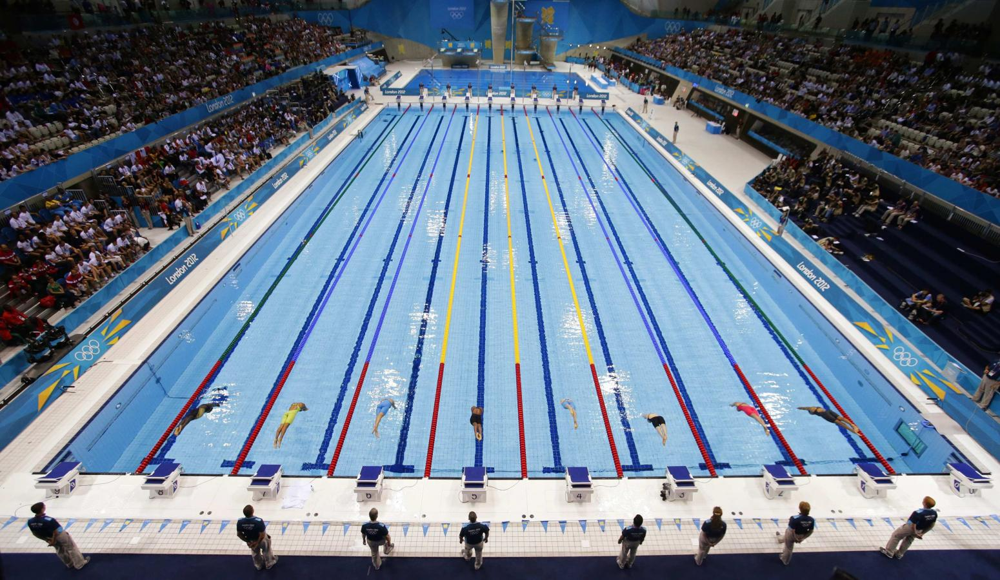

About Swimming
Swimming is not just a sport but a way of life. It is an excellent exercise that enhances flexibility, builds muscle, and soothes the mind.
Swimming Techniques
Mastering various swimming techniques can significantly improve your performance and enjoyment of swimming. Here's a breakdown:
-
Freestyle
- The most common stroke known for its speed and efficiency.
-
Backstroke
- Performed on the back, offering a unique perspective of the sky or ceiling.
-
Breaststroke
- Known for its distinctive frog-like stroke.
-
Butterfly
- One of the most challenging strokes requiring perfect coordination.
Benefits of Swimming
Swimming provides numerous physical and mental benefits, including:
- Improving cardiovascular health.
- Enhancing muscle tone and strength.
- Boosting mental health.
- Providing a full-body workout.
Major Swimming Events
Here are some of the world's major swimming events that inspire millions:
- Olympic Games
- World Championships
- European Championships
- Pan Pacific Championships
Watch a Swimming Technique Tutorial
Swimming World Records